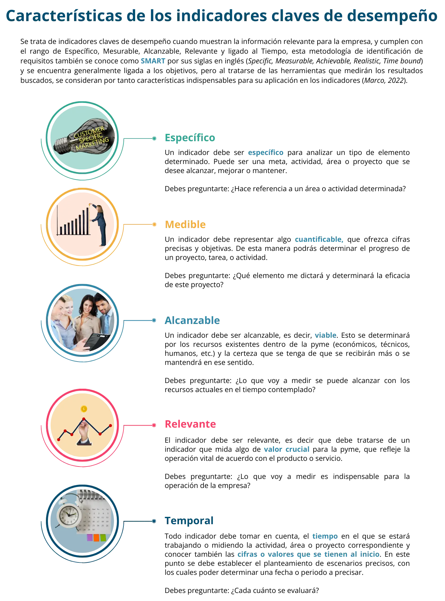
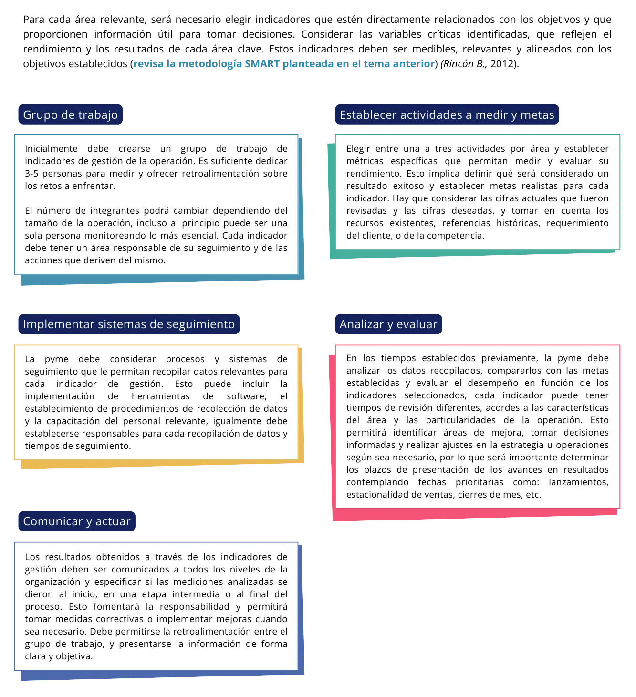
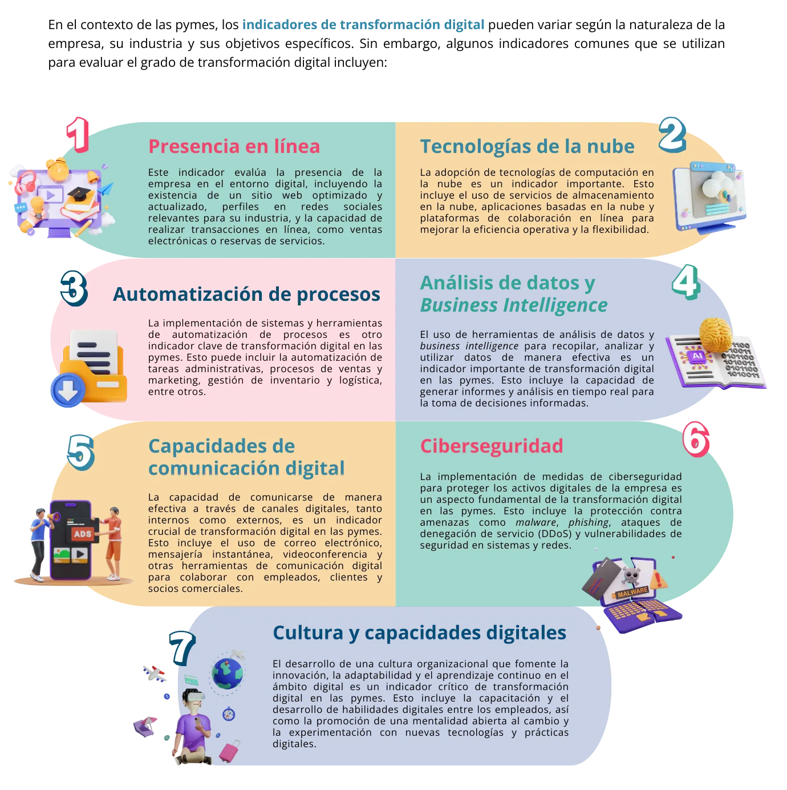
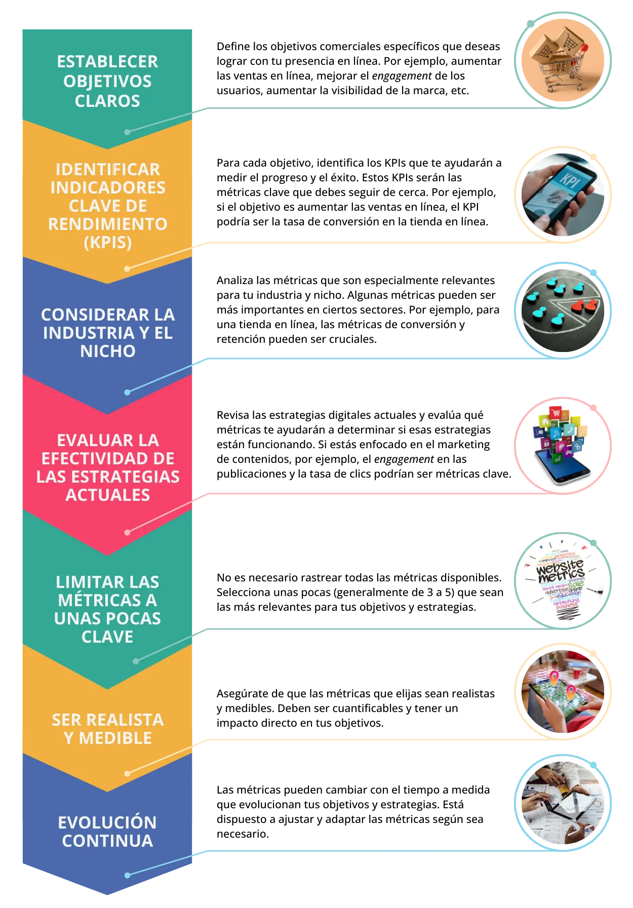

build Introducción
“Lo que no se mide, no se puede mejorar”, una máxima que se conoce en el medio empresarial que habla de la importancia de medir de forma constante y sistemática todo lo que involucra el seguimiento de objetivos, con la finalidad de encontrar los ajustes que sea necesario aplicar, o bien cambiar la dirección de las decisiones previas para conseguir las metas previamente determinadas.
Los indicadores, también conocidos por sus siglas en inglés KPI por key performance indicator, son relevantes para la comunidad de negocios y emprendimiento porque ayudan a impulsar mejoras y a enfocar los esfuerzos y recursos en lo que es importante, ya que se basan en los objetivos y metas que tienen trazadas las organizaciones, lo cual para la pyme representa una oportunidad para establecer estos puntos que frecuentemente no están bien definidos.
En el caso de las pymes, conocer los indicadores y dónde aplicarlos resulta esencial para evaluar las estrategias aplicadas en las diferentes áreas de una organización y, principalmente, para identificar parámetros de cambio entre las características iniciales de un proceso y los resultados alcanzados.
En este sentido, es importante conocer los indicadores para aplicar en una pyme y, de igual forma, identificar cuáles son los más útiles para la empresa en específico, de acuerdo con el tipo de producto o servicio, modelo de negocio, canal de venta y clientes potenciales, ya que hay que tomar en cuenta que no todos los indicadores son útiles, en cualquier caso.
Los indicadores o métricas permitirán conocer mejor el desarrollo de la pyme, al dar herramientas confiables de análisis de los procesos principales tales como: ventas, inventario, gestión de talento, tráfico de página web, crédito y cobranza, tiempos de entrega, satisfacción del cliente, garantías o reembolsos, entre otros que, al medirse, permitirán entender si se están alcanzando los objetivos planteados en los tiempos previstos, o si es necesario realizar cambios, acordes con las metas trazadas.
En resumen, implementar sistemas de indicadores y métricas en el ámbito empresarial otorga a las organizaciones la ventaja competitiva de generar información confiable sobre el comportamiento de los procesos y el logro de los objetivos estratégicos formulados a corto, mediano y largo plazos. (Rueda Galvis, Garavito Hernández, & Calderón Campos, 2020).
troubleshoot ¿Qué son los indicadores y métricas?
1 Definición
La Asociación Española de Normalización y Certificación (AENOR) en su norma UNE66175, define el término (3.6) Indicador como: datos o conjunto de datos que ayudan a medir objetivamente la evolución de un proceso o de una actividad. (AENOR Asociación española de Normalización y Certificación, 2003). Otra definición dice que un indicador es “instrumento administrativo que puede diagnosticar problemas, identificar oportunidades, medir comportamientos, definir estrategias y asignar responsabilidades, a través de datos cuantitativos que ofrecen una visión global y real de la competitividad de la empresa.” (Rincón B., 2012)
Así un indicador es un elemento de información que contribuye a la evaluación de una situación por parte del responsable de la toma de decisiones. Ahora bien, un indicador de desempeño o KPI (Key Performance Indicator) se utiliza para designar puntos de referencia importantes para que una empresa cumpla sus objetivos comerciales. Es decir, se establece un KPI posterior a un análisis donde el producto o servicio de la empresa se alinea con los objetivos trazados y se determinan las áreas clave para el cumplimiento de estos.
Es importante distinguir entre indicador y métrica, con la finalidad de articular adecuadamente su uso e implementación en la estrategia empresarial.
Se considera que el indicador es una forma de medir que utiliza métricas junto con criterios de decisión preestablecidos. Por otro lado, todo lo que se rastrea o mide es una métrica. La métrica es el parámetro de medida, que utilizará el indicador para mostrar el análisis al inicio y final del plazo determinado. Son medidas cuantificables que se utilizan para medir el rendimiento o el progreso (Herrera , 2018).

2 Características de los indicadores claves de desempeño
3 Tipos de indicadores
4 Selección e implementación de indicadores apropiados
Ahora que tienes más información sobre los tipos de indicadores, es importante elegir los más adecuados para la gestión de la pyme que ayuden a medir su desempeño, y determinar un plan de acción para implementarlos dentro de la operación y comenzar al seguimiento de los resultados que permitan tomar decisiones informadas.
Es importante resaltar que la elección e implementación de estos indicadores deben concebirse como herramientas con aplicación más amplia que la medición de los resultados planteados. Se trata de articularlos con la estrategia del negocio. Por eso se deben comunicar entre los directivos o socios, así como hacia el personal, lo cual permitirá que la organización en su conjunto camine en una meta en común. (Rincón B., 2012)
Identificación de los objetivos y metas de la empresa
Dentro de toda organización es importante establecer una visión que acompañe la dirección que tomará la empresa, una misión que establezca lo que representa la empresa en tiempo presente, su razón de ser y alineado con esto los objetivos o metas que desea alcanzar, acorde al producto o servicio de la pyme, así como al momento que enfrenta.
En este sentido, para establecer los indicadores que se buscan utilizar, se debe realizar una revisión de estos puntos mencionados, y agregar el desarrollo de un breve análisis FODA, que de acuerdo con sus siglas defina claramente las Fortalezas, Oportunidades, Debilidades y Amenazas que enfrenta la pyme en el momento de la revisión, esto ayudará a identificar las áreas en las que la empresa necesita mejorar y aquellas en las que ya destaca, considerando que existen factores internos propios de la organización como la capacidad del equipo, los recursos disponibles, la eficiencia operativa y otros aspectos clave del negocio, así como factores externos como las tendencias del mercado, la competencia y factores económicos, políticos y sociales relevantes del medio donde se desarrollan las operaciones de la pyme.
Con esta revisión, la pyme será capaz de priorizar cuáles son los objetivos y metas en los que se centrarán los indicadores, ya que no todo es relevante para la operación, y aplicar una medición a todos los elementos de la empresa solo entorpecería la toma de decisiones. (Santos Pascualena, 2023.
Cómo elegir los KPIs más relevantes para medir el éxito
En el apartado anterior, se realizó un ejercicio de revisión de análisis de las bases de gestión de la pyme, con lo cual será posible identificar las áreas clave del negocio que son fundamentales para alcanzar esos objetivos y metas, y estableces los indicadores apropiados.
Estas áreas clave del negocio serán diferentes entre cada caso y pueden incluir ventas, marketing, operaciones, recursos humanos, finanzas, servicio al cliente, entre otras, en este punto el análisis FODA apoyará sustancialmente en la determinación.
Evitar la sobrecarga de indicadores y elaborar el plan de implementación
En relación con lo abordado en el punto anterior, como pyme es posible que se considere a todas las áreas como clave, pero el ejercicio puede promover una saturación de información.
Por eso, se recomienda iniciar el plan de implementación con pocas áreas, y en este sentido, se plantea un listado que puede atenderse para otorgar mayor claridad y pericia al momento de elegir las áreas clave y, por lo tanto, los indicadores correspondientes para aplicar.
- Reconocer cuál es el motor económico de la empresa y los retos que está enfrentando de acuerdo con el FODA realizado y alineado con los objetivos planteados.
- Analizar de forma estadística los datos y las métricas, dentro de documentos como: estados financieros, reportes de inventarios, de ventas, de costos, entre otros.
- Elaborar un mapa de procesos, que ofrezca un mapa visual de los procesos de la empresa para identificar las áreas funcionales y los flujos de trabajo involucrados en la operación.
- Realizar un análisis de la cadena de valor, donde se determine cómo se crea valor en cada etapa del proceso de la empresa y determina qué áreas son fundamentales para la entrega de productos o servicios.
- Identificar asuntos de atención inmediata por su significado como amenaza a la marcha del negocio.
5 Procedimiento para implantar el sistema de indicadores en la pyme
6 Métricas en un entorno digital y su importancia para la pyme
Para hablar de métricas en un entorno digital, primero se debe definir a qué se entiende por entorno digital; aunque no hay una sola definición, para propósitos del presente eje temático se entenderá como una serie de elementos interconectados o vinculados todos a internet, que implica la presencia web de las empresas, en todas o algunas de sus actividades principales, como por ejemplo: ventas en línea, catálogo en línea, distribución en línea, servicios proporcionados en preventa o post venta vía web, promoción y comunicación con los clientes o usuarios potenciales o directos a través de página web o de redes sociales. (Kohavi & Thomke, 2017)
Estos elementos que involucran el entorno digital, pueden ser actividades que definen la presencia y operación de las empresas en línea. Sin duda el primer elemento sería contar con un sitio Web y/o Plataformas en Línea donde tengan establecidas secciones como: tienda en línea, o un blog referente al producto/servicio con testimoniales de clientes, una plataforma de comercio electrónico, o bien, plataformas correspondientes a redes sociales que se utilicen para promoción, comunicación y cierre de venta, así como la utilización de aplicaciones móviles, referentes con el producto o servicio. En la actualidad todas estas actividades pueden desarrollarse a través de proveedores externos, que han desarrollado este tipo de plataformas con un entorno amigable para que el emprendedor por sí solo pueda crear el espacio virtual a su gusto y ajustándose a un presupuesto ajustado que no suponga un costo elevado de creación y mantenimiento para la pyme. (Huayllas Iriarte & Reinaltt Higa, 2019).
7 Estrategia para el entorno digital en la pyme
La incorporación de procesos dentro de la operación y la creación de sistemas de control, administrativos, a través de elementos digitales como software específico para estos fines, también se considera como un entorno digital para las empresas, ya que involucra el trazado de una nueva estrategia de control, mantenimiento y una inversión monetaria que generalmente busca agilizar los tiempos como parte de la construcción de la ventaja competitiva ante el mercado.
Estos procesos mantienen a la pyme en vigilancia constante sobre el entorno, detectando si existen tecnologías emergentes que se usen por competidores, o que son sugeridas por los clientes como una medida para mejorar la experiencia del cliente o la eficiencia operativa.
Además de la vigilancia en el entorno, esta incorporación de la empresa al entorno digital contempla la responsabilidad de mantener en capacitación y formación constante al personal involucrado en el uso y mantenimiento de cada elemento, actividad o proceso, para obtener el mayor rendimiento operativo y financiero.
Otra responsabilidad derivada del entorno digital es diseñar e implementar una estrategia de contenidos, que refleje de forma positiva y redituable la propuesta de valor del negocio. La estrategia debe contemplar un plan con objetivos, resultados esperados y fechas de publicación de contenidos para los clientes-usuarios potenciales y actuales, que puede incluir: planificación de promociones, producción de blogs, videos, infografías, podcasts, etc.
8 Indicadores de transformación digital en las pymes
Definición de métricas digitales y su importancia para la pyme
Las métricas digitales son medidas cuantitativas y cualitativas utilizadas para evaluar y analizar el desempeño de las actividades en entornos digitales. Estas métricas se obtienen a través del seguimiento y análisis de los datos generados por las interacciones y transacciones en línea, como el tráfico web, las redes sociales, las conversiones, entre otros. (Chaffey & Ellis-Chadwick, 2019)
En el contexto de la pyme, las métricas digitales desempeñan un papel fundamental en el éxito y la eficacia de su presencia en línea. Al analizar y medir estas métricas, las empresas pueden obtener información valiosa sobre el comportamiento de sus clientes, la efectividad de sus estrategias digitales y el retorno de la inversión (ROI) que han logrado.
El análisis de métricas digitales proporciona información objetiva y cuantificable sobre el rendimiento de sus actividades en línea. Esto permite tomar decisiones informadas en cuanto a las estrategias de marketing, los canales de promoción, el diseño del sitio web, entre otros.
También brinda identificación de áreas de mejora, porque al medir y analizar las métricas digitales, es posible identificar fácilmente las áreas en las que no están obteniendo los resultados deseados, tal cual se observó en los indicadores anteriores. Esto brinda la oportunidad de mejorar sus estrategias o realizar ajustes para maximizar la eficacia de sus tácticas digitales.
Las métricas digitales también permiten a la pyme evaluar el rendimiento de sus inversiones en marketing y publicidad en línea, como parte de los indicadores financieros en lo que se conoce como retorno de la inversión (ROI), al medir el impacto real de las estrategias digitales y a justificar los recursos destinados a esas actividades. (Kaushik , 2007)
Al comprender las métricas digitales se puede adaptar la estrategia de marketing y ventas en línea para alcanzar los objetivos, pues estas métricas proporcionan información clave sobre el perfil y el comportamiento de los clientes, lo que permite una segmentación más precisa y un enfoque más efectivo en la comunicación y promoción.
Principales métricas digitales
Las métricas más importantes pueden variar según la industria y los objetivos específicos de cada pyme en el entorno digital, y también dependerá del grado de involucramiento que tenga en su operación hacia el mundo digital, puede ser que solo parte de sus procesos o actividades están ligadas a la web, mientras que otras funcionen en el ámbito físico.
A continuación, se presentarán las métricas más conocidas en el entorno digital, para que la pyme pueda elegir de acuerdo con el contexto de los objetivos y el sector del mercado cual representa mayor utilidad para su aplicación. Como en los ejemplos de indicadores anteriores, se sugiere un seguimiento constante y realizar un ejercicio de adaptación a medida que evolucionan los objetivos y las estrategias digitales se consideran esenciales para aprovechar al máximo estas métricas clave. (Kaushik , 2007)
-
Tasa de Conversión: La tasa de conversión mide el porcentaje de visitantes de un sitio web o plataforma digital que realiza una acción deseada, como realizar una compra, llenar un formulario de contacto o suscribirse a una lista de correo. Esta métrica es crucial para medir la efectividad de su sitio web o página de destino en convertir visitantes en clientes.
La fórmula es:
(Número de Conversiones / Número de Visitantes) * 100.
Al monitorear y mejorar la tasa de conversión, se puede ajustar su diseño, contenido y llamados a la acción para maximizar el retorno de inversión. - Tasa de Rebote: La tasa de rebote se refiere al porcentaje de visitantes que abandonan un sitio web o una página después de ver solo una página. Una alta tasa de rebote generalmente indica que los visitantes no están encontrando lo que buscaban o no están interactuando con el contenido. Esta métrica es determinante para evaluar la calidad y relevancia del contenido de la empresa, ya que una tasa de rebote alta puede indicar que la página no cumple con las expectativas de los visitantes. En caso de que se identifique un problema, se puede sugerir optimizar el contenido, mejorar la navegación y proporcionar una experiencia más atractiva.
- Engagement: por su acepción en inglés referente al compromiso entre comprador y vendedor, se refiere a la medida en que los usuarios interactúan y se involucran con el contenido y las acciones en línea de la empresa. Puede medirse a través de likes, comentarios, publicaciones compartidas, tiempo de permanencia en el sitio, entre otros. El engagement ayuda a comprender si el contenido y las interacciones están captando el interés del público. Un alto engagement indica que los usuarios encuentran valioso y relevante el contenido, lo que puede aumentar la lealtad y la retención.
- Conversión y embudo de ventas: La conversión se refiere a la acción deseada que un visitante realiza, como hacer una compra, registrarse en un boletín informativo o llenar un formulario. El embudo de ventas representa el proceso de conversión desde el primer contacto hasta la acción final. Medir las conversiones y analizar el embudo de ventas es fundamental para evaluar la eficacia del proceso de conversión en línea. Ayuda a identificar dónde los visitantes pueden abandonar el proceso y permite ajustar estrategias para optimizar las tasas de conversión.
- Retención: La retención mide la cantidad de usuarios que regresan a una plataforma o sitio web después de su primera visita. Puede ser medido a través de la tasa de retención o la frecuencia de visitas repetidas. Es importante para evaluar la satisfacción y el valor a largo plazo que el sitio o plataforma brinda a los usuarios. Una alta retención indica que los visitantes encuentran contenido útil y atractivo, lo que puede llevar a un mayor engagement y conversiones.
- Medición de experiencia del usuario (UX): La medición de UX (por sus siglas en inglés User Experience) se enfoca en evaluar la facilidad de uso, la eficiencia y la satisfacción general de los usuarios al interactuar con una plataforma digital. Su medición es crucial para asegurar que los usuarios tengan una experiencia positiva en línea. Evalúa aspectos como la navegación, la velocidad de carga y la accesibilidad, lo que puede influir en el engagement, la retención y las conversiones.
Selección de métricas digitales apropiadas para la pyme
Como se mencionó anteriormente, la elección de indicadores o en este caso, de métricas digitales, dependerá de la actividad en línea que tenga actualmente la pyme, así como de los objetivos planteados dentro de la estrategia digital.
Se establecerá un proceso general para abarcar los elementos más importantes en el plan de uso de métricas digitales, y deberá adaptar a cada caso y realizar una revisión continua para ajustarse a la realidad que enfrente la pyme en cada etapa de su desarrollo.
Referencias
AENOR Asociación española de Normalización y Certificación. (2003). UNE 66175 Guía para la implantación de sistemas de indicadores. Madrid: AENOR.
Chaffey, D., & Ellis-Chadwick, F. (2019). Digital Marketing: Strategy, Implementation and Practice. . USA: Pearson Education Limited.
Guinart i Solà , J. (2003). Indicadores de gestión para las entidades públicas . VIII Congreso Internacional del CLAD sobre la Reforma del Estado y de la Administración Pública (págs. 28-31). Panamá: CLAD.
Herrera , R. (2018). Tu Dashborad. Diferencia entre métrica e indicador ¿Qué quieres medir?: https://tudashboard.com/diferencia-entre-metrica-e-indicador/
Huayllas Iriarte, A. A., & Reinaltt Higa, B. A. (2019). Estrategia digital en pyme del sector retail que permita el incremento de ventas. Lima: Universidad Peruana de Ciencias Aplicadas (UPC). Recuperado de http://hdl.handle.net/10757/648671
Janićijević, N. (2010). Business Processes in Organizational Diagnosis. Management, 15(2), 85-106.
Kaushik , A. (2007). Web Analytics: An Hour a Day. Washington: John Wiley & Sons.
Kohavi, R., & Thomke, S. (2017). The Surprising Power of Online Experiments: Evidence from A/B Testing. Harvard Business Review, 23-34.
Marco, N. (26 de MARZO de 2022). Tipos de indicadores. Recuperado de Indicadores SMART: https://tiposdeindicadores.com/indicadores-smart/
Porter, M. (2010). Ventaja competitiva: creación y sostenibilidad de un rendimiento superior. Pirámide.
Rincón B., R. D. (2012). Los indicadores de gestión organizacional: una guía para su definición. Revista Universidad Eafit, 34(111), 43-59.
Rodrigues, N. (2022). Grandes pymes. Recuperado de Los 5 indicadores de procesos más relevantes para las empresas: https://www.grandespymes.com.ar/2022/11/16/los-5-indicadores-de-procesos-mas-relevantes-para-las-empresas/
Rueda Galvis, J. F., Garavito Hernández, Y., & Calderón Campos, J. A. (2020). Indicadores de gestión como herramienta de diagnóstico para pymes. I+D Revista de Investigaciones Volumen 15 Número 2, 119-134. doi https://doi.org/10.33304/revinv.v15n2-2020011
Santos Pascualena, J. (2023). Mentoring Negocios. Recuperado de Indicadores de desempeño para la pequeña empresa. Haz crecer tu negocio con datos: https://mentoringnegocios.com/indicadores-desempeno-empresa/
loyalty Beneficios

account_tree Proceso